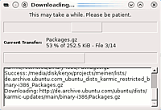
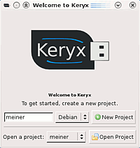
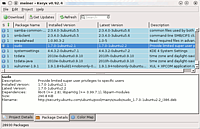

Keryx
Archivierte Anleitung
Dieser Artikel wurde archiviert, da er - oder Teile daraus - nur noch unter einer älteren Ubuntu-Version nutzbar ist. Diese Anleitung wird vom Wiki-Team weder auf Richtigkeit überprüft noch anderweitig gepflegt. Zusätzlich wurde der Artikel für weitere Änderungen gesperrt.
Zum Verständnis dieses Artikels sind folgende Seiten hilfreich:
Keryx  ist ein Programm, dass es ermöglicht, auf einem Rechner ohne Internetanbindung Updates oder auch neue Programme problemlos zu Installieren. Voraussetzung ist lediglich ein zweiter PC mit (schnellerer) Internetanbindung und ein portables Speichermedium, z.B. ein USB-Stick. Die Vorteile:
ist ein Programm, dass es ermöglicht, auf einem Rechner ohne Internetanbindung Updates oder auch neue Programme problemlos zu Installieren. Voraussetzung ist lediglich ein zweiter PC mit (schnellerer) Internetanbindung und ein portables Speichermedium, z.B. ein USB-Stick. Die Vorteile:
Benutzer mit einer langsamen oder gar ganz ohne Internetverbindung können ihr System leicht updaten
Abhängigkeiten werden bei neuen Programmen aufgelöst
Eine Aktualisierung ist auch über Windowsrechner möglich
Weitere Programme mit ähnlichen Funktionen finden sich unter Lokale Paketquellen. Möchte man für viele gleichartige PCs in einem Netzwerk die Pakete nur einmal herunterladen, sollte man stattdessen einen lokalen Cache/Proxy nutzen.
Funktionsweise¶
 Das Programm Keryx erstellt an dem PC mit langsamer oder ohne Internetverbindung, im Folgenden "Offline-PC" genannt, eine Liste aller installierten Pakete auf einem portablen Datenträger, z.B. einem USB-Stick oder einer externen Festplatte. Diese kann daraufhin von einem Online-PC auf Aktualisierungen überprüft werden. Sind Aktualisierungen vorhanden, kann man diese auswählen und herunterladen. Auch zusätzliche Pakete können heruntergeladen werden. Keryx löst dabei die Abhängigkeiten auf und lädt ggf. benötigte weitere Pakete automatisch herunter. Keryx kann nun von diesem Datenträger alle veralteten Pakete auf dem Offline-PC aktualisieren und zusätzliche installieren.
Installation¶
Manuell¶
Da Keryx in Python geschrieben ist, muss man es nicht installieren. Es genügt, die aktuelle Version 1.0  als Archivdatei (.tar.gz) herunterzuladen und auf einen externen Datenträger zu entpacken [1].
als Archivdatei (.tar.gz) herunterzuladen und auf einen externen Datenträger zu entpacken [1].
Hinweis!
Fremdsoftware kann das System gefährden.
PPA¶
Für Ubuntu 10.04 wird ein "Personal Package Archiv" (PPA) [2] angeboten.
Adresszeile zum Hinzufügen des PPAs:
ppa:keryx-admins/keryx-ppa
Hinweis!
Zusätzliche Fremdquellen können das System gefährden.
Ein PPA unterstützt nicht zwangsläufig alle Ubuntu-Versionen. Weitere Informationen sind der  PPA-Beschreibung des Eigentümers/Teams keryx-admins zu entnehmen.
PPA-Beschreibung des Eigentümers/Teams keryx-admins zu entnehmen.
Damit Pakete aus dem PPA genutzt werden können, müssen die Paketquellen neu eingelesen werden.
Nach dem Aktualisieren der Paketquellen kann das folgende Paket installiert werden:
keryx (ppa)
 mit apturl
mit apturl
Paketliste zum Kopieren:
sudo apt-get install keryx
sudo aptitude install keryx
Datenträgergröße¶
Der benötigte Speicherplatz ist abhängig von der Anzahl der installierten Pakete und der Zeit, die seit dem letzten Update vergangen ist. Man sollte also einige hundert MB freien Speicherplatz auf dem Datenträger haben. Wenn man sich nicht sicher ist, kann Keryx auch von der Festplatte aus gestartet werden und der benötigte Speicherplatz des Keryx-Ordners nach dem Herunterladen der Pakete bspw. mit einem Dateimanager ermittelt werden, bevor er komplett auf den externen Datenträger kopiert oder verschoben wird.
Format¶
Das Dateisystem des Datenträgers ist prinzipiell unerheblich. Allerdings sollte man, wenn man Keryx unter Linux verwendet den Datenträger mit ext2 oder einem kompatiblen Dateisystem erstellen, um die Datei ausführbar machen zu können. Wer Keryx auch mit einem Windowsrechner benutzen möchte, sollte einen NTFS- oder FAT-formatierten Datenträger benutzen und Keryx über den Windowsrechner darauf installieren.
Anwendung¶
Im Ordner /keryx/linux auf dem portablen Datenträger befindet sich die Datei keryx, mit der das Programm gestartet wird [3].
Hinweis:
Die grafische Oberfläche des Programms kann nur gestartet werden, wenn das folgende Paket installiert ist:
python-wxversion (universe)
mit apturl
Paketliste zum Kopieren:
sudo apt-get install python-wxversion
sudo aptitude install python-wxversion
Trotzdem können auf der Kommandozeile – wie unten beschrieben – eigene Projekte erstellt werden.

Vorgefertigte Projekte¶
Der Vorteil dieser Projekte ist, dass man einmal weniger zwischen Off- und Online-PC wechseln muss. Der Nachteil ist, dass diese Projekte von einer frischen Installation ausgehen und weder wissen, welche Pakete installiert sind, noch, wann das letzte Update eingespielt wurde. Es ist deshalb damit zu rechnen, dass sowohl spezielle Pakete nicht berücksichtigt werden als auch, dass die Downloadgröße und der benötigte Speicherplatz auf dem externen Datenträger erheblich größer sind.
Für Ubuntu 8.04, 9.04 und 10.04 sind fertige Projekte erhältlich: projects.zip . Diese Archivdatei kann man in das Verzeichnis /keryx/projects entpacken, direkt mit "Open Project" auf dem Online-PC öffnen und eine Aktualisierung aller veralteten Pakete herunterladen.
Eigene Projekte¶
Sollte man lieber selbst eine Liste der vorhandenen Pakete erstellen wollen, so ist dies möglich, indem man Keryx auf dem Offline-PC startet und mit "New Project" ein neues Projekt anlegt. Die Frage, ob die Paketlisten heruntergeladen werden sollen kann man mit "No" beantworten.
Lässt sich die grafische Oberfläche von Keryx nicht starten, kann man auf die Kommandozeile ausweichen um ein eigenes Projekt zu erstellen. Dazu navigiert man in das keryx/linux Verzeichnis und führt folgenden Befehl aus:
./keryx --create <Projektname>
Hierbei sollte man <Projektname> durch eine eigene Bezeichnung ersetzen.

Herunterladen der Pakete¶
Man öffnet das Projekt auf dem Online-PC mit "Open Project" und lädt die Paketlisten herunter.
Pakete, die aktualisiert werden können, sind in blauer Farbe dargestellt. Sie können mit "Get Updates" heruntergeladen werden. Möchte man zusätzliche Pakete installieren, so markiert man sie und lädt sie mit "Download" herunter. Tipp: Die Reihenfolge in der die Pakete angezeigt werden kann durch einen Klick auf den entsprechenden Reiter eingestellt werden. Lässt man die Pakete, anstatt nach Namen, nach Status (Reiter "S") ordnen, so kann man alle Pakete, die aktualisiert werden können, hintereinander ansehen.
Herunterladen mit Windows¶
Es ist auch möglich, aktualisierbare Pakete über einen Windowsrechner herunterzuladen. Im Verzeichnis /keryx/win32 befindet sich hierfür das ausführbare Programm keryx.exe. Die weitere Vorgehensweise ist die gleiche wie mit Ubuntu.
Installation der Pakete¶
Um die Pakete zu installieren, öffnet man das Projekt auf dem Offline-PC und installiert mit "Project -> Install Packages..." die gewünschten Pakete.
Links¶
Paketverwaltung
 Einstiegsseite zur Paketverwaltung
Einstiegsseite zur PaketverwaltungLokale Paketquellen - Paketquellen auf Datenträgern/im Netzwerk
Update - Softwareaktualisierung unter Ubuntu
- Erstellt mit Inyoka
-
 2004 – 2017 ubuntuusers.de • Einige Rechte vorbehalten
2004 – 2017 ubuntuusers.de • Einige Rechte vorbehalten
Lizenz • Kontakt • Datenschutz • Impressum • Serverstatus -
Serverhousing gespendet von